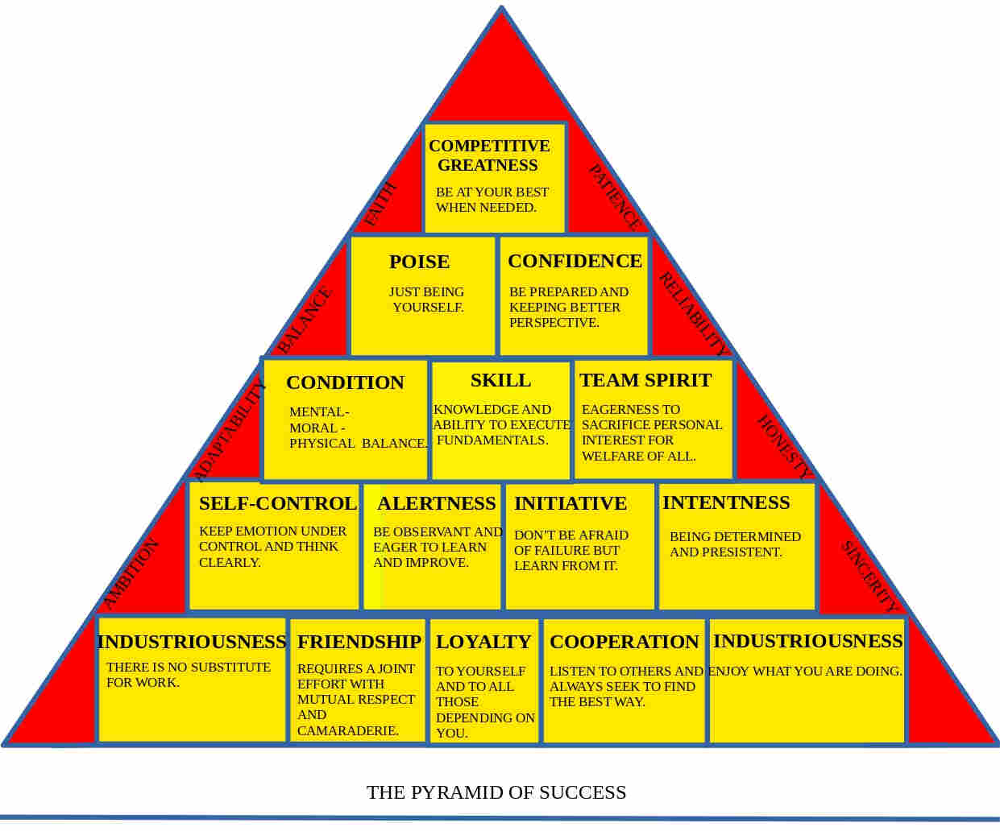

John Wooden on Leadership
The most read book about epitome of great leader, John wooden.
By Prajwal Basnet | Aug 23 2022 | 5 minute read
In 2022, I called John wooden on Leadership one of my favourite book of the year. This book is so full of wisdom that, in writing this blog, i wrestled with whether to make it complete or consise and decided to try to make it both by highlighting the knowledge in the quotes at the bottom of page to create quick read version.
Coach John wooden personal story -of someone from humble beginnings who grew up in his Indiana farm house and sucessfully navigated to become the greatest coach of 20th century-is fascinating. During his tenure as a head coach of UCLA, He won 10 NCAA champion in 12 years, 7 NCAA in row, wining rate of 94 percent, with 88 game streak still to this day. However, It does not happen at a snap It took 15 years for him to win his first NCAA champion and the question arises why did it took him 15 years?
Coach made his own defination of success and pyramid of sucess which is a roadmap for individual and team excellence. His defination of sucess is
“Sucess is a peace of mind which is a direct result of self satisfaction in knowing you made an effort to become the best you are capable.”
“Sucess is a peace of mind which is a direct result of self satisfaction in knowing you made an effort to become the best you are capable.” According to him, To became sucessful in his/her work one should never cease trying to be the best one can become. Similarly, He made pyramid of success to make everyone attain their maximum potential. It is made up of 15 other components. The foundation of pyramid is made up of 5 blocks in which industriousness and enthusiasm are the cornerstone of pyramid.
- Industrious: It is true work where one is fully focused and completely absorbed.
- Enthusiasm: One must be filled with energy and truly enjoy their work. It is like the fuel that drives the engine, so it cannot be faked.
- Friendship, Loyality and cooperation: The leader must maintain the respect and camaradrie(spirit of goodwill that exist between two individual ) when making the friendship. The leader must have loyality to organization and people which starts with loyality to his standard and value.Also, Leader must listen and evaluate every opinion of the team. And, Leader must limit his/her ego and be open to every opinion.
- Self-control: It is essential to control emotion and think clearly all the times. For example, Coach never allowed his player to show anger or fraustration because they would get upset and make poor decision.
- Alertness: A good leader observe weak spots of his team as well as his opponent.
- Intiative: Make mistake and learn from failure. However, failure should not come from poor preparation or carelessness.
- Intentness: A good leader must have presistance and faith that he/she shall prevail at the end. It keeps you in the game even when other tells you game over.
- Condition: Inorder to be the best, one must need good mental,moral and physical condition. And, the only way to acheive good condition is through balance in everything.
- Skill: It is the heart of pypramid.A good leader must have superior knowledge of his job in all aspect and be able to excute quickly and correctly.
- Team spirit: A good leader should ensure that the team member are unselfish and put the goal of organization above their own personal desire. Also, leader should hire and reward to those who put their team interest above their own. A leader job is to make the team better than the sum of all individual.
- poise and confidence: poise is vital quality of a good leader which is remaning true to one belif and acting accordingly. It is the quality that will help leader to act under pressure.Similarly, real confidence comes naturally- like poise - which is earned only from the knowledge that each member team has done their best.
- Competitive greatness: To acheive competitive greatness, one must embrace the joy derived from struggle.
A true competitor loves the battle
This book captures the benefit of advertising value. The author put it best when he wrote, "Good values are like magnet which attracts people". The idea of advertising value is doubly pertinent in hiring process. As a result, Mr. Wooden was able to attract, seven foot tall, Kareem Abdul-Jabbar who had better offer than UCLA at a time. The author, in his veritable wisdom, also accounts for human nature by creating distinction between character and reputation. He gives former as “what you really are ” and latter “ what other thinks of you”. Similarly, He explains the laws of learning which are Explanation, Demostration, Imitation and Repetation.
The book is good at explanning the qualities a good leader should have, such as a leader must be displinarian, demostrator, counsellor, role model, judge etc . Mr. wooden makes it clear that each job counts -especially those in lesser role- so, he advocated that achieving great thing is possible in every job. He was also aware of using positive words - as it become meaningless when used excessively. And, I am impressed by his way of specifiying penalty with strong suggestion and unspecified consequence.
In the end, I came back to my starting premise that for the first 15 years coach simplifies the complexity of leadership and made it simple with his pyramid of sucess, just like darwin and natural selection, Einstein and realtivity, Adam smith and division of labor. They took a complex world and simplified it and that takes many years.
John wooden on Leadership is ultimately a leadership book that covers the life work of legendary coach John wooden. I think anyone would enjoy this book, whether they're looking for leadership book or seeking virtue or just having a good read. If you never watched any of his talks, John wooden on Leadership will help you get a sense of why he was so special. I wish I could tell John wooden how much i liked it. John wooden on Leadership is fantastic book, and I hope a lot of people read it.
Wooden on Leadership Quotes
Never cease trying to be the best which you are capable.
Make each day your masterpiece.
Ability may get you to the top, but it takes character to keep you there.
Master 4p's: planning, preparation, practice and performance.
Never lie, Never cheat, Never steal.
Don't whine, Don't complain, Don't cheat.
The star of sucessful team is team.
Great result comes with great effort.
Do not expect favor, do your part.
The key to success is balance.
Expect unexpected oppurtunity.
A good leader always seek improvement.
Look for yes man who will say no.
What you learn after you know it's all that counts.
Failure is not fatal but failure to change might be.
Welcome contrary ideas but not contrarians.
Prepare for each opponent with same intensity & respect.
There is no education like adversity.
Physical, Mental and moral condition is leadership strength.
Before you lead others, you must be able to lead yourself.
Don't hastily Replace old fashioned with the new fangled.
Be quick, but don't hurry.
Mistake are part of winning so make sure it is right kind of mistakes.
The choice you make makes you.
The strength of wolf is pack and the strength of pack is wolf.
Player who made the team great is better than great player.
Be ready when oppurtunity arrives, or it may not arrive again.
Recognize the difference between rules that can be waived ocassionally and those that go the core of philosophy.
Use your time well & cheerfull. Then, when you drop from life's tree, you will drop like ripe fruits.
Send out loyality & It will return.
When it's over I want your headup. And the only way your heads can be up- that's to give the best of your, everything you have.